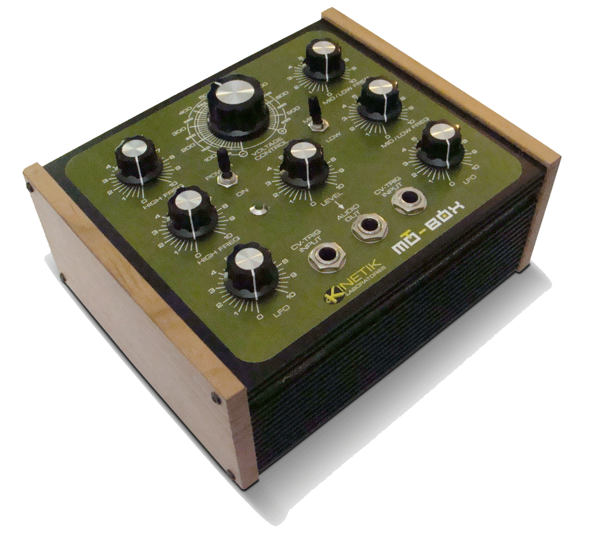

MOT-BOX
Production year: 2009 Mot-Box is a sound generator, with four audio oscillators, two lfos and two 1/4" jack inputs, available to connect external analog gear. All in a rugged box, with cherry wood side plates. It produces sounds varying from drones to helter-skelter…

Production year: 2009
Mot-Box is a sound generator, with four audio oscillators, two lfos and two 1/4" jack inputs, available to connect external analog gear. All in a rugged box, with cherry wood side plates. It produces sounds varying from drones to helter-skelter noises.
The Mot-Box is based on an original, copyrighted design by Arthur Harrison, which is used by his permission. The original cacophonator article is on Art's Theremin Page: theremin.us/Circuit_Library/cacophonator.html
Build your own!